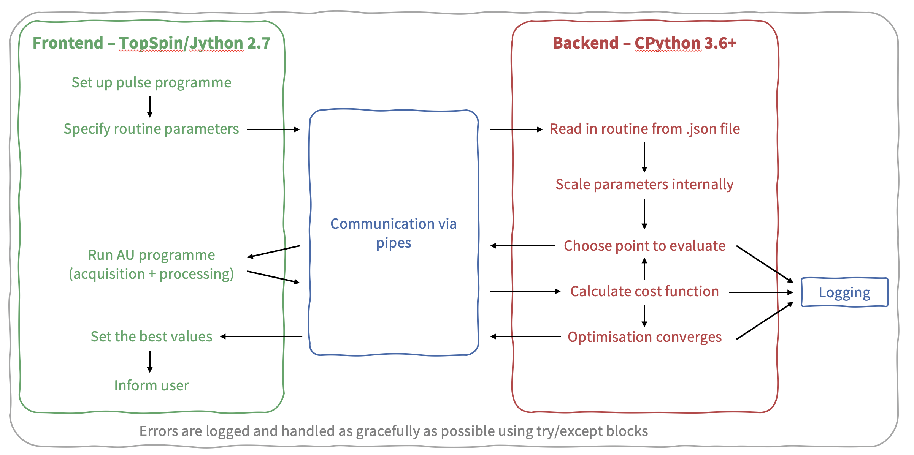

Developer notes¶
POISE does not contain all that much code. However, if you are thinking of modifying it, it helps to have an understanding of the distinction between the frontend and the backend. This graphic (taken from an old presentation) is a slightly more technical description of the flowchart presented in the POISE paper, and shows which part is responsible for which step. It’s a good starting point for understanding how POISE works internally.
Beyond this, we recommend reading the source code of POISE: start at the frontend script (poise.py, which is run from inside TopSpin), then go to the backend script (poise_backend/backend.py) at the appropriate time (when the frontend launches it as a subprocess).
The source code is quite thoroughly commented.
There are two main things to point out.
Probably the most important thing worth mentioning is the location of the relevant files.
The backend script is always ran from $TS/py/user/poise_backend (putting it here allows the frontend to access it much more easily).
The entire $TS/py/user/poise_backend folder is treated as if it is a Python package, by virtue of some code near the top of poise_backend.py:
if __name__ == "__main__" and __package__ is None:
__package__ = "poise_backend"
sys.path.insert(1, str(Path(__file__).parents[1].resolve()))
__import__(__package__)
This allows relative imports of the other files in the same directory, such as costfunctions.py, in which the user-defined cost functions reside.
Note
These backend files also reside inside the Python 3 site-packages directory, where all packages are installed to. However, these files will never be used by POISE. So, there is nothing to be gained by modifying these at all.
The only file inside the site-packages directory which has any effect is nmrpoise/__init__.py, where the parse_log() function is defined. This allows you to (for example) run:
>>> from nmrpoise import parse_log
Python will look inside the site-packages directory, not $TS/py/user, to find this function.
The second thing is that you should never, ever, do anything with the backend’s stdin and stdout, because these are exclusively reserved for communication with the frontend.
So you should never print anything from the backend, since the frontend will just interpret that as an error.
This applies to all files inside the $TS/py/user/poise_backend directory, including cost functions, which is why custom cost functions should always use POISE’s log function instead of plain old print.
Note
If you really just want to do some quick-and-dirty debugging, you can actually use this behaviour to your advantage. The frontend will echo any “invalid” message it receives from the backend, so if you print some unexpected text from the backend (on purpose), you should see it pop up as a TopSpin message when you run an optimisation. This is slightly less hassle than printing to a file and opening the file.
Testing¶
Tests are carried out using the excellent pytest and tox tools. To run all tests, simply run:
pip install tox
tox
from anywhere inside the nmrpoise directory.
This runs tests on Python 3.6, 3.7, and 3.8.
If you only have one of these versions, use:
tox -e py38 # or py36 or py37
To build the Sphinx documentation, use:
tox -e docs
The HTML documentation will be built in docs/dirhtml, and the PDF documentation in docs/latex (this assumes you have a working installation of pdflatex on your system).